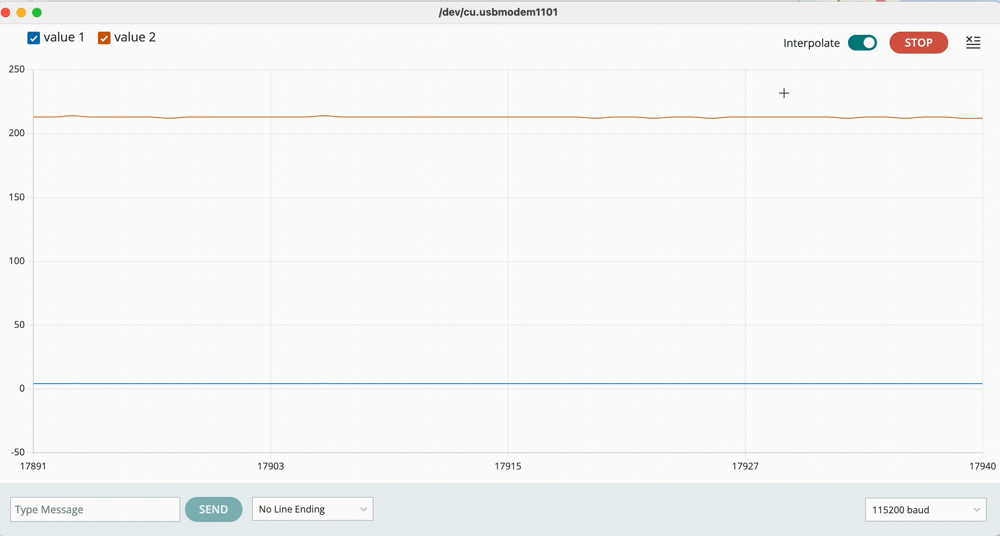

Schematic

schematic!
Circuit

circuit!
Circuit Operation

circuit's operation!
Graph

Please click the picture, there are two more inside.
| Sensor: LDR Voltage Divider |
Use an LDR with a 10 kΩ resistor to form a voltage divider;
A0 reads the midpoint voltage (brighter → higher voltage).
5V ── LDR ──●── 10 kΩ ── GND
│
A0
|
|---|---|
| Output Device: Three LEDs (Red, Yellow, Blue) |
|
| Rationale |
The 10 kΩ resistor allows the Arduino to sensitively detect light changes. The 220 Ω / 100 Ω resistors protect the LEDs and ensure brightness matching. |
schematic!
circuit!
circuit's operation!
Please click the picture, there are two more inside.
const int R = 9, Y = 10, B = 6; // three LEDs (PWM)
const int LDR = A0; // A0 reads the voltage divider (midpoint of LDR+10k)
// initialization
void setup() {
pinMode(R, OUTPUT); pinMode(Y, OUTPUT); pinMode(B, OUTPUT);
Serial.begin(115200);
Serial.println(F("[A3] LDR→RGB demo. Divider: 10k to GND; PWM on D9/D10/D6."));
}
void loop() {
int adc = analogRead(LDR); // 0..1023
int level = map(adc, 0, 1023, 0, 255); // 0..255
if (adc < 400) { // darker -> reddish
analogWrite(R, level); // Red changes with brightness (level)
analogWrite(Y, level/2); // Yellow is half of red
analogWrite(B, 0); // blue closes
} else if (adc > 700) { // bright -> bluish
analogWrite(R, 0); // red closes
analogWrite(Y, level/2); // Yellow is half of blue
analogWrite(B, level); // Blue with brightness
} else { // mid -> yellowish
analogWrite(R, level/2); // Red Weak
analogWrite(Y, level); // Yellow is the brightest
analogWrite(B, level/2); // blue weak
}
// Calculate voltage (in volts) and output to the serial plotter: V, PWM
float v = adc * (5.0 / 1023.0);
Serial.print(v, 3);
Serial.print(",");
Serial.println(level);
delay(30); // Slight delay for easy observation
}
Answer:
Yes, either position works — the divider output just changes its direction depending on where the LDR is placed.
voltage divider layout:
R1 (top)
5V ── LDR ──●── 10 kΩ ── GND
│
A0
R2 (bottom)
Formula: Vmeasure = Vs × R2 / (R1 + R2)
When light increases → LDR resistance (R1) decreases → denominator decreases →
Vmeasure increases.
In other words: brighter → higher voltage (ADC value goes up).
Formula: Vmeasure = Vs × R2 / (R1 + R2)
When light increases → LDR resistance (R2) decreases → numerator decreases →
Vmeasure decreases.
In other words: brighter → lower voltage (ADC value goes down).
| Light Condition | LDR Resistance | LDR on Top → Vmeasure | LDR on Bottom → Vmeasure |
|---|---|---|---|
| Dark | 100 kΩ | ≈ 0.45 V | ≈ 4.55 V |
| Indoor | 10 kΩ | ≈ 2.50 V | ≈ 2.50 V |
| Bright | 1 kΩ | ≈ 4.55 V | ≈ 0.45 V |
Both configurations are valid; the only difference is the direction of change.
• If you want brighter → larger ADC value, put the LDR on top (near +5V).
• If you want brighter → smaller ADC value, put the LDR on bottom (near GND).
• If it is reversed, simply invert the reading in code:
adc = 1023 - adc;
In the Serial Plotter, value1 (blue) represents the measured voltage across the LDR divider, and value2 (orange) represents the PWM output to the LEDs. The x-axis corresponds to time (sampling index), and the y-axis shows the measured values. As light intensity increases, Vmeasure (value1) rises and the PWM output (value2) changes accordingly, demonstrating the LDR’s control over the LED brightness.

Human flicker-fusion threshold ≈ 50–60 Hz (period ≈ 20–16.7 ms). For a steady look, use ≥100 Hz (≤10 ms period).
Yes. I used AI to learn HTML embedding for code and checked current limits. I tested both simulation and physical circuit.